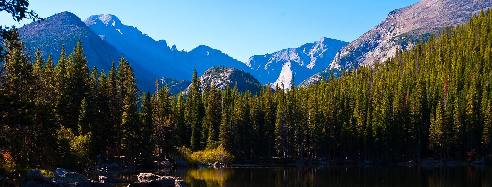
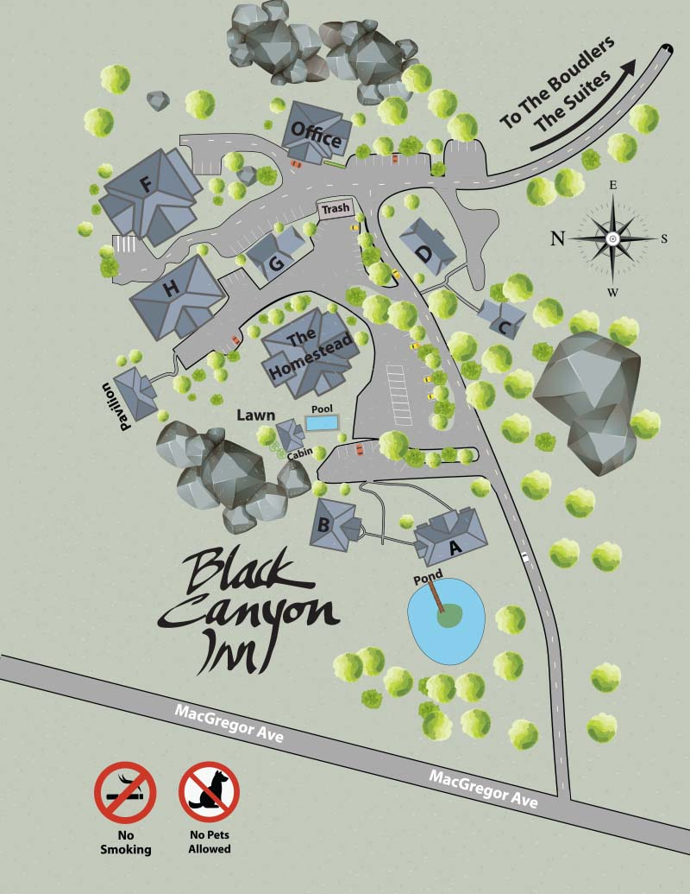

Venue Information

Our wedding will be in one of our favorite states, Colorado. Our guests are recommended to arrive the day before the wedding in case of any snow delays.
Black Canyon Inn
800 MacGregor AvenueEstes Park, CO 80517
www.blackcanyoninn.com
The venue is located in Estes Park, CO, approximately 1.5hrs from the nearest airport with a breathtaking road trip.The nearest airport to the venue is Denver International Airport.
Once you're inside Black CanyonWhen you come in to Black Canyon Inn, head straight in and make a right towards “The Boulders” Venue.
Signs will be located throughout the entrance as“The Balboa Wedding” to further assist.
